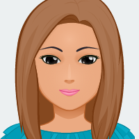

En Dark Den Network, tenemos experiencia real operando estos servidores por simple diversión; esto se traduce en niveles de comprensión y pasión que le garantizamos que no encontrará en ningún otro lugar.
Fundada en 2019, Dark Den Network es una empresa Española. Nuestro equipo está formado por profesionales altamente experimentados Nos esforzamos por mantener unos gastos generales bajos mientras nos adherimos a un estándar excepcionalmente alto de calidad.
Nuestros clientes disfrutan de los beneficios de tener una solución económica que ofrece un rendimiento excepcional.
Saul
|

Naiara
|
German
|
Antoni
|
Jhonatan
|
Valentin
|